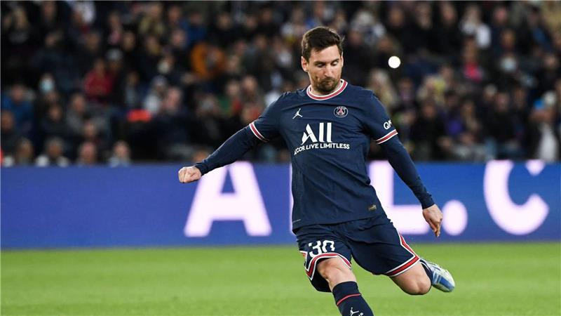

Mas reciente

El equipo de Messi continua ganando, esta vez goleó al Nantes. Los goles fueron de Messi primero a los 22', luego cuando estaba terminando el primer tiempo Neymar es quien pone el marcador 2 a 0, después Sergio Ramos es quien pone el partido 3 a 0 y termina el partido con un gol de penal que tomo Neymar. El penal fue ocasionado por Casttelleto, jugador que nadie conoce pero pego un patadón y se llevó la roja. La pulga esta imparable que se agarren las patas en Qatar...
Ver más